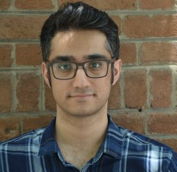
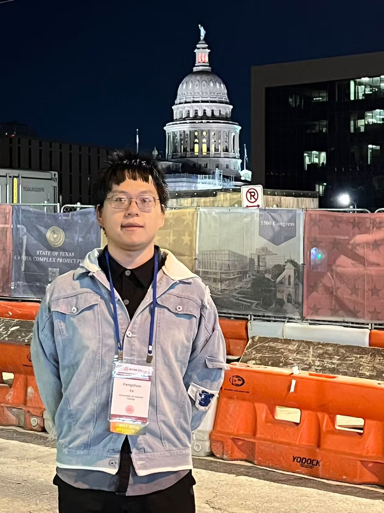

Shilin Tian Ph.D. alumnus · UCF
Dean's Dissertation Fellowship · ORC Fellowship
People
Per aspera ad astra—through hardships to the stars.Iron sharpens iron—together, we cultivate talent and rise through every challenge.If you want to go far, go together—every achievement is made possible by our team.
Faculty
Students

Ph.D. Student · Since Fall 2022
B.S., Shiraz University

Ph.D. Student · Since Fall 2023
B.S., Zhejiang University
ECE Best Graduate Researcher Award · FFL Fellowship · ORC Fellowship
Ph.D. Student · Joining Fall 2026
B.S., University of Wisconsin–Madison
Ph.D. Student · Joining Fall 2026
B.S., Universitas Gadjah Mada
Students
No current master's students are listed on the lab roster.
Students
Undergraduate Researcher · Fall 2025–present
Undergraduate Researcher · Spring 2026–present
AMD Fellowship
Alumni
Dean's Dissertation Fellowship · ORC Fellowship
Associate Professor (with tenure), NUAA
Associate Professor (with tenure), Shandong University
UCF
AMD Fellowship · UCF
AMD Fellowship · UCF
AMD Fellowship · UCF
AMD Fellowship · UCF
UCF
UCF
2025 Order of Pegasus, UCF's highest student award
UCF
UCF
UCF
UCF